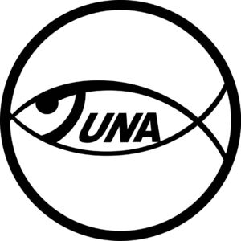

Trade Mark Journal No.2025/052 26 December 2025
WO0000001890752 (9,16,29,35)
Office of origin: Japan
Date of International Registration:26 September 2025
Date of designation in the UK:
26 September 2025

International priority date claimed: 8 April 2025
(Japan)
- Class 9
- Electronic publications; downloadable electronic publications; image files that can be received and saved via the Internet; downloadable video files; downloadable graphics for mobile phones.
- Class 16
- Food wrapping plastic film for household use; paper and cardboard; printed matter; catalogues; food bags of paper or plastics; packing paper; paper or cardboard labels.
- Class 29
- Tuna, not live; bonito, not live; tuna fillets; bonito fillets; processed tuna; processed bonito; preserved tuna; preserved bonito; canned tuna; canned bonito; food products made primarily from tuna; food products made primarily from bonito.
- Class 35
- Providing information concerning commercial sales; providing business information; providing business information via a website; online advertising on a computer network; Internet advertising services; advertising; providing commercial information and advice for consumers in the choice of products and services; retail services or wholesale services for sea food.
Japan Tuna Cooperative
Japan Tuna Corporation
Representative: KONDO Rieko, Mitobe Building, 5th Floor,, 1-13-1 Kandaizumi-cho,, Chiyoda-ku, Tokyo 101-0024, JAPAN